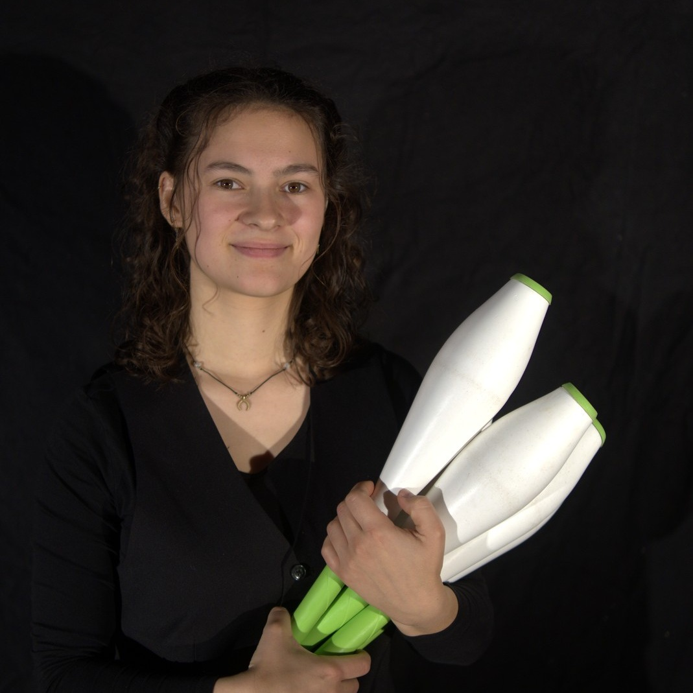
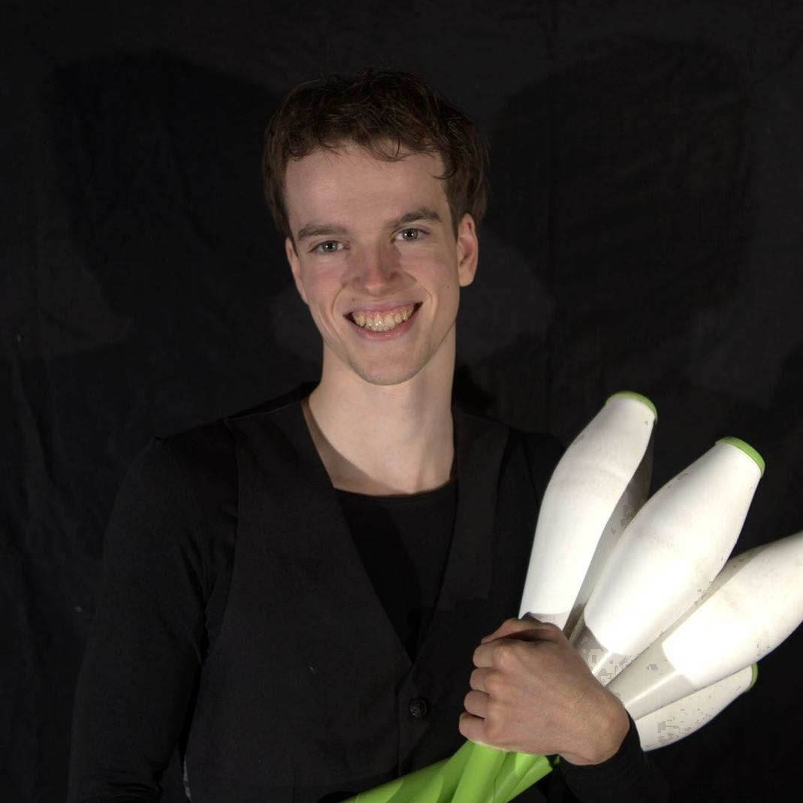

Ronja
Mitbegründerin von Synchronica

Ronja ist eine ehrgeizige Newcomerin mit Gespür für Musik und Inszenierung. Bei der Deutschen Synchron-Meisterschaft im Jonglieren gewannen Flo und Ronja gemeinsam eine Medaille.
Mitbegründerin von Synchronica

Ronja ist eine ehrgeizige Newcomerin mit Gespür für Musik und Inszenierung. Bei der Deutschen Synchron-Meisterschaft im Jonglieren gewannen Flo und Ronja gemeinsam eine Medaille.
Mitbegründer von Synchronica

Flo hat sieben deutsche Meistertitel in technischer Jonglage gewonnen, gehörte 2025 zu den Top 40 Jugglers und trat bei der Gala der weltgrößten Jonglierconvention auf.